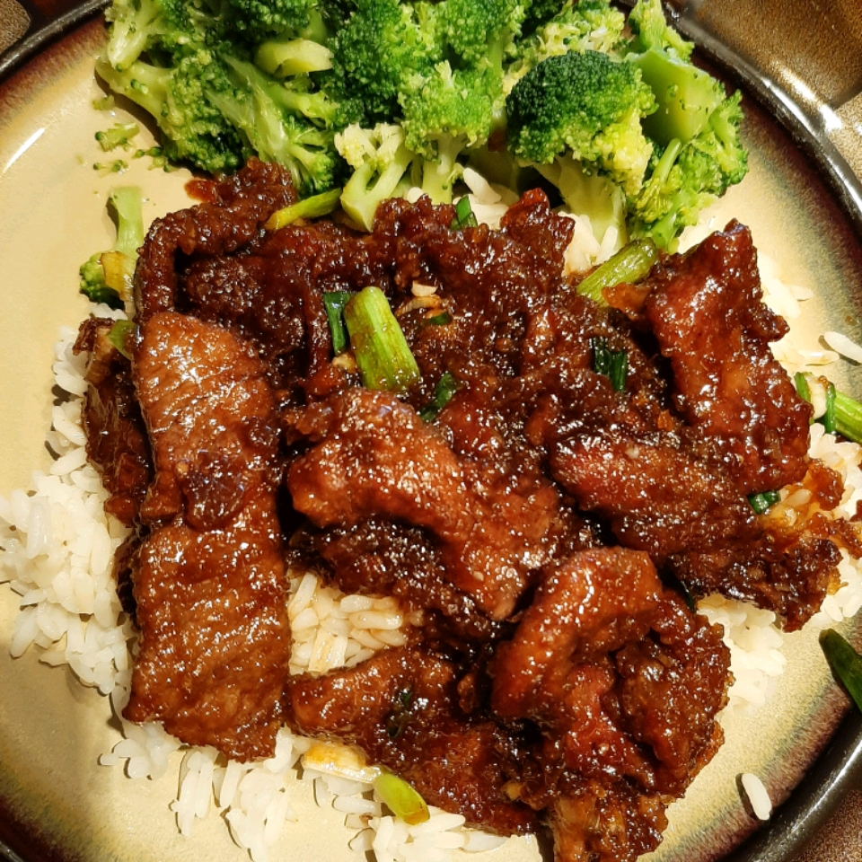

Mongolian Beef and Spring Onions

This Mongolian beef recipe with green onions has a soy-based sauce for a Chinese-style beef dish. Best served over soft rice noodles or rice.
This recipe is a Chinese-style beef dish that features crispy slices of flank steak with a sweet soy-based sauce and green onions. The beef is first coated in cornstarch and then fried until the edges become crisp. The sauce is made with garlic, ginger, dark brown sugar, soy sauce, and water. The green onions are added to the skillet along with the beef slices and prepared sauce. The dish is cooked until the onions have just softened and are bright green.
Ingredients
2 teaspoons vegetable oil
1 tablespoon finely chopped garlic
½ teaspoon grated fresh ginger root
1 pound beef flank steak, sliced 1/4 inch thick on the diagonal
1 cup vegetable oil for frying
2 bunches green onions, cut in 2-inch lengths
Steps
Heat 2 teaspoons of vegetable oil in a saucepan over medium heat. Add garlic and ginger; cook and stir until fragrant, about 30 seconds. Stir in brown sugar, soy sauce, and water. Increase heat to medium-high; stir until sauce boils and slightly thickens, about 4 minutes. Remove sauce from the heat and set aside.
Place beef into a large bowl; add cornstarch and mix until beef is thoroughly coated. Set aside until most of the cornstarch has been absorbed, about 10 minutes.
Heat vegetable oil in a deep skillet to 375 degrees F (190 degrees C).
Shake excess cornstarch from beef slices and drop into hot oil, a few at a time, stirring briefly and frying until edges become crisp, about 2 minutes. Remove beef with a large slotted spoon; drain on paper towels.
Remove excess oil from the skillet, then heat the skillet over medium heat; add beef slices and stir in prepared sauce. Add green onions and bring to a boil; cook until the onions have just softened and are bright green, about 1 to 2 minutes.